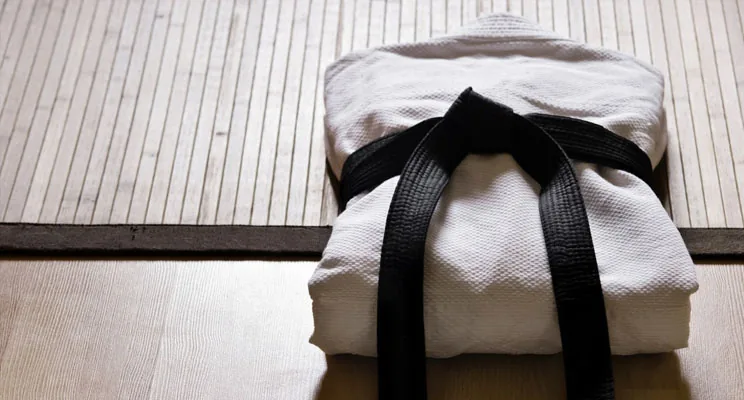

Information de 2024. Elle n’est plus à jour. Voir l’information actuelle

Back to DOJO, BIENVENUE A TOUS, WELCOME BACK
Chers Karatékas,
A partir de ce Dimanche 1 septembre, nous reprenons les cours normalement au dojo. Vous trouverez ci-dessous et ci-joint le récapitulatif des horaires de rentrée pour la saison 2024-2025.
Petit rappel, Officiellement la saison de Karaté reprendra à partir du dimanche 1er Septembre aux horaires normaux. De ce fait les cours enfants du samedi ne recommenceront qu’à partir du samedi samedi 7 septembre!
Horaires SAISON 2024 – 2025
HORAIRE DES COURS à partir du dimanche 1er Septembre
DIMANCHE: de 10h00 à 11h00 Kumite 10 ans et + 7è kyu (orange) et +
DIMANCHE: de 11h00 à 12h00 Kata – 10 ans et + 7è kyu (orange) et +
LUNDI: de 21h00 à 22h00 18 ans et plus
MERCREDI: de 18h45 à 19h45 de 9 à 12 ans
MERCREDI: de 19h45 à 20h45 de 13 à 17 ans
MERCREDI: de 20h45 à 21h45 18 ans et plus <5 Kyu – bleu
JEUDI: de 20h00 à 21h30 KUMITE
VENDREDI: de 21h00 à 22h00 18 ans et plus
SAMEDI: de 13h30 à 14h30 de 6 à 7 ans
SAMEDI: de 14h30 à 15h30 de 8 à 9 ans
SAMEDI: de 15h30 à 16h45 de 10 à 12 ans
SAMEDI: de 16h45 à 18h00 de 13 à 17 ans
- Nouvelle grille horaire